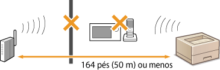

0KU8-03J
Junto nesta seção, veja Problemas comuns.
A rede LAN sem fio e LAN com fio não podem ser conectadas simultaneamente. Você pode usar o USB e a LAN sem fio ou o USB e a LAN com fio simultaneamente.
Se a impressora estiver conectada a uma rede LAN sem fio, verifique se o indicador  (Wi-Fi) está aceso e o endereço IP está corretamente definido, depois reinicie o Remote UI novamente.
(Wi-Fi) está aceso e o endereço IP está corretamente definido, depois reinicie o Remote UI novamente.
Parte frontal
Visualizando as definições de rede
(Wi-Fi) está aceso e o endereço IP está corretamente definido, depois reinicie o Remote UI novamente. Parte frontal
Visualizando as definições de rede
Se a impressora estiver conectada a uma rede LAN com fio, verifique se o cabo está firmemente conectado e o endereço IP está corretamente definido, depois reinicie o Remote UI novamente.
Conectando a uma rede LAN sem Fio
Visualizando as definições de rede
Conectando a uma rede LAN sem Fio
Visualizando as definições de rede
Você está usando um servidor de proxy? Se estiver usando um servidor de proxy, adicione o endereço IP da impressora à lista [Exceções] (endereços que não utilizam o servidor de proxy) no diálogo de configuração de proxy do navegador da web.
A comunicação em seu computador está restrita por um firewall? Se o Remote UI não puder ser exibida por causa de configurações incorretas, use o botão de reset para inicializar as configurações de gerenciamento do sistema.
Usando firewalls para restringir a comunicação
Inicialização com o botão de reset
Usando firewalls para restringir a comunicação
Inicialização com o botão de reset
As configurações de conexão podem não estar corretas. Use a Ferramenta de Configuração de Rede MF/LBP para definir as configurações de conexão.
Guia de instalação do driver de impressora
Guia de instalação do driver de impressora
Ao conectar a uma rede LAN sem fio, verifique se a impressora está adequadamente instalada e pronta para se conectar à rede.
Quando a impressora não puder se conectar à LAN sem fios
Quando a impressora não puder se conectar à LAN sem fios
Você usou a Ferramenta de Configuração de Rede MF/LBP para definir as configurações de rede LAN com fio? Se não usou, não poderá alterar o método de conexão de LAN sem fio para LAN com fio nesta impressora. Ao definir as configurações, selecione [Instalação Personalizada] como o método de configuração.
Guia de instalação do driver de impressora
Guia de instalação do driver de impressora
Use um cabo Ethernet direto para a conexão de LAN com fio.
Verifique se o hub ou roteador estão LIGADOS.
Não conecte o cabo na porta UP-LINK (cascata) do hub.
Troque o cabo de rede.
 |
|
 |
|
Verifique o status de seu computador
As configurações do computador e do roteador sem fio foram concluídas?
Os cabos do roteador sem fio (incluindo o cabo de alimentação e o cabo LAN) estão corretamente conectados?
O roteador sem fio está ligado?
Se o problema persistir mesmo após a verificação acima:
Desligue os dispositivos e ligue-os novamente.
Espere um momento e tente se conectar à rede novamente.
|
|
|
||||
 |
 |
Verifique se a impressora está LIGADA
O indicador
 (Energia) não acende se a impressora não estiver ligada. (Energia) não acende se a impressora não estiver ligada. Se a impressora estiver ligada, desligue-a e ligue-a novamente.
|
||
|
|
||||
 |
Verifique o local de instalação da impressora e o roteador sem fio
A impressora está muito longe do roteador sem fio?
Há algum obstáculo, como paredes, entre a impressora e o roteador sem fio?
Há algum aparelho emissor de ondas de rádio (p.ex. forno de micro-ondas ou telefones sem fio) próximo da impressora?
 |
|||
|
|
||||
 |
 |
Reinicie as configurações de LAN sem fio
|
 |
|
Quando é necessário configurar a conexão manualmente
Se o roteador sem fio estiver definido como descrito abaixo, digite a informação necessária.
A função de modo furtivo é ativada.
O bloqueio a todas as conexões ("ANY") * está ativado.
O número de chave WEP a ser usado é definido como um número de 2 a 4.
A chave WEP (hexadecimal) gerada automaticamente é selecionada.
* Uma função na qual o roteador sem fio recusa a conexão se o SSID no dispositivo a ser conectado estiver definido como "ANY" ou estiver em branco.
Quando é necessário alterar as configurações do roteador sem fio
Se o roteador sem fio estiver definido como descrito abaixo, altere as configurações do roteador.
A filtragem de endereço MAC está ativada.
Quando somente IEEE 802.11n é usado para a comunicação sem fio, o WEP é selecionado ou o método de criptografia WPA/WPA2 é definido como TKIP.
|
Troque o cabo USB. se o cabo for longo, troque-o por um mais curto.
Se você estiver usando um hub USB, conecte a impressora diretamente ao computador usando um cabo USB.
O servidor de impressão e o computador estão conectados corretamente?
O servidor de impressão está funcionando?
Você possui direitos de usuário para se conectar ao servidor de impressão? Se não tiver certeza, consulte o administrador do servidor de impressão.
A [Descoberta de rede] está ativada? (Windows Vista, 7, 8, Server 2008 e Server 2012)
Ativando a [Descoberta de rede]
Ativando a [Descoberta de rede]
Em uma rede, a impressora aparece entre as impressoras do servidor de impressão? Se ela não for exibida, contate o administrador da rede ou do servidor.
Exibindo impressoras compartilhadas no Servidor de impressão
Exibindo impressoras compartilhadas no Servidor de impressão